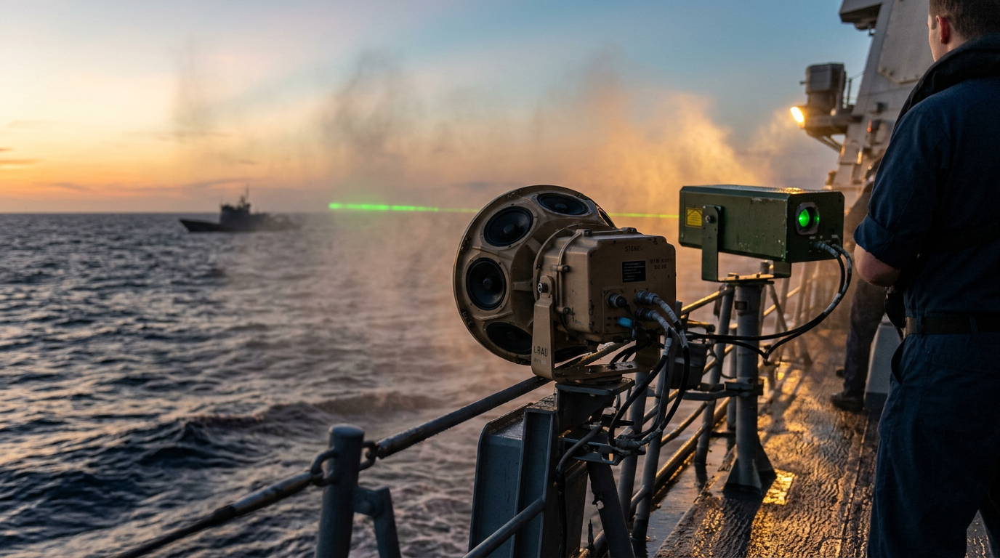
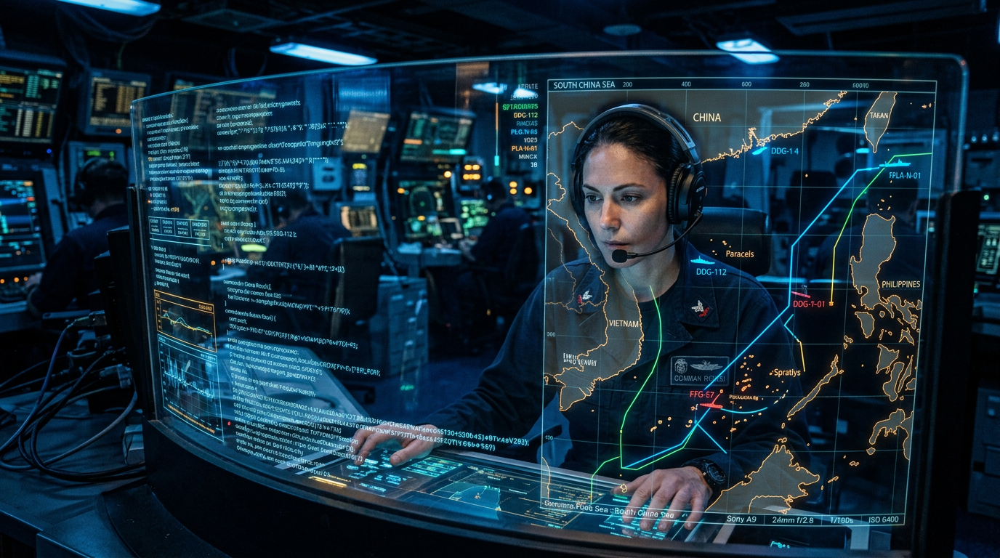
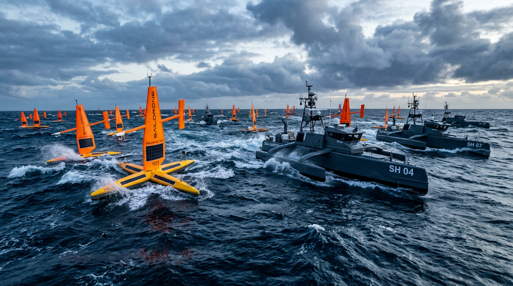
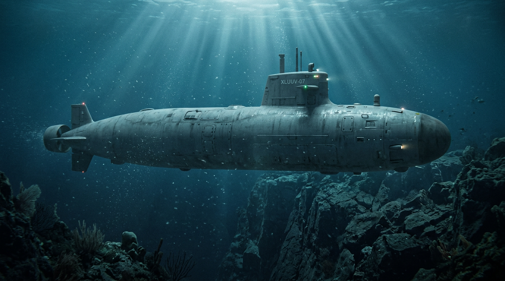
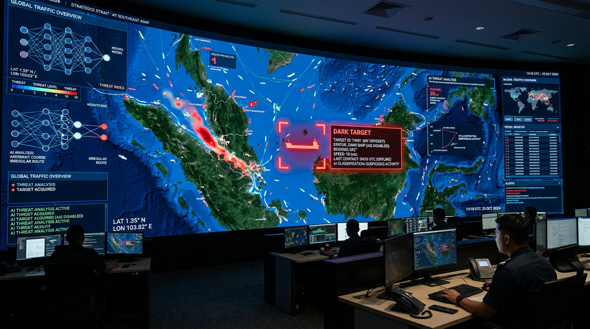

As the strategic environment becomes increasingly contested, the United States Navy and Coast Guard must balance the imperative of maintaining a robust global maritime presence with the need to mitigate the risk of unintended escalation. This document outlines a comprehensive stabilization strategy focused on adjusting Rules of Engagement (ROE), strengthening bilateral and multilateral communication channels, and rapidly integrating technology-driven surveillance alternatives to reduce the exposure of manned platforms.
To minimize tactical miscalculations while preserving the right to self-defense and freedom of navigation, ROE should be adapted to emphasize graduated, non-kinetic responses and strict escalation control.


Effective tactical and strategic communication is paramount to preventing "gray zone" incidents from spiraling into conventional conflict.
Replacing or augmenting manned patrols with unmanned systems reduces the risk to US personnel, lowers the operational footprint, and provides persistent ISR (Intelligence, Surveillance, and Reconnaissance) capabilities.

Scale initiatives similar to NAVCENT's Task Force 59. Deploy fleets of long-endurance USVs (e.g., Saildrones, Sea Hunters) equipped with radar, AIS, and optical sensors. These assets can maintain a persistent forward presence, absorb aggressive blocking maneuvers, and provide early warning without risking human lives.

Expand the use of large and extra-large UUVs (XLUUVs) for anti-submarine warfare (ASW) surveillance and chokepoint monitoring. UUVs allow the US to maintain a stealthy, persistent presence in highly contested anti-access/area-denial (A2/AD) environments where manned vessels would be highly vulnerable.
Leverage platforms like the MQ-4C Triton and MQ-9B SeaGuardian for broad-area maritime surveillance. These platforms provide over-the-horizon targeting and vessel tracking, reducing the need for forward-deployed Arleigh Burke-class destroyers simply for ISR purposes.

Deepen integration with commercial space-based ISR providers (e.g., Synthetic Aperture Radar (SAR) and RF mapping constellations like HawkEye 360). Utilize Artificial Intelligence and Machine Learning (AI/ML) to fuse this data with AIS tracks, automatically identifying "dark targets" (vessels turning off AIS) and anomalies in maritime traffic, queuing unmanned assets to investigate rather than dispatching a manned ship.
By
adopting graduated ROE focused on non-kinetic deterrence, enforcing robust tactical communication
protocols, and aggressively transitioning routine ISR missions to an unmanned and space-based
architecture, the US military can effectively maintain its global maritime presence.
This hybrid approach ensures freedom of navigation and deters malign
actors while significantly minimizing the risk of strategic miscalculation and the exposure of
manned forces.